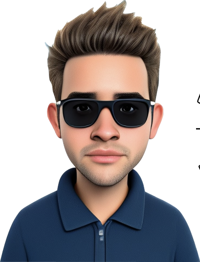

Master's degree in Biomechanics from Politecnico di Torino and a Bachelor's degree in Biomedical Engineering from Università degli Studi di Palermo.My research experience includes medical image elaboration, 3D printing, and the application of augmented reality in orthopedic surgery.I have been Research Fellow at Politecnico di Torino. My skills include coding in C#, Matlab, Python, and expertise in various software and libraries relevant to image processing, computer vision and 3D modeling.
 After obtaining the High School diploma from the Istituto Tecnico Industriale E.Torricelli - S.Agata Militello (ME) specializing in Chemistry, Materials, and Biotechnology, I completed my studies in Biomedical Engineering. I completed my bachelor’s degree at the University of Palermo (Biomaterial and Medical Devices L-9) and my master’s degree at the Polytechnic University of Turin (Biomechanics LM-21). I conducted my thesis on the Application of Augmented Reality in Orthopedic Surgical Simulation, in collaboration with the Department of Neuroscience "Rita Levi Montalcini" (UniTo) , Intravides, and the Department of Electronics and Telecommunications (PoliTo)
(Prof. F. Molinari). Through a Research Fellowship at the 3D Lab (Department of Management and Production Engineering), I participated in the project Surgery guides for Maxillofacial Applications (SMA) (Prof. S. Moos), which led to the publication of the journal article Augmented reality simulation framework for minimally invasive orthopedic surgery
Even before completing my Master’s Degree, I focused my studies on the integration of Artificial Intelligence, Digital Twin concepts, and subject-specific models in the Biomedical field. I completed a final project for my bachelor’s degree on Deep Learning Applied to Cardiac Mechanics (Prof. S. Pasta). My studies at the Polytechnic University of Turin allowed me to deepen my skills in these areas. My skills include Patient-specific 3D models for anatomical modeling from imaging (Mimics and Rhinoceros); Physiological signal analysis (Matlab); Numerical simulation for cardiovascular fluid dynamics (SimVascular, VMTK); Medical image segmentation (Monai,
Tensorflow, Keras); CAD modeling (Fusion 360); Computer graphics (Blender, Unity 3D); Body pose estimation in space; Principles of computer vision (OpenCV, calibration methods, optical tracking systems). In this context, I am a co-author of two conference papers (Mixed Reality for Orthopedic Elbow Surgery Training and Operating Room Applications: A Preliminary Analysis | A Gaze Detection System for Neuropsychiatric Disorders Remote Diagnosis Support).
During my high school studies, I developed technical-scientific and technological foundations, oriented towards innovation and understanding the interdependence between science, economy, and technology. In this context, I specialized in Analytical Chemistry, Organic Chemistry, and Microbiology, gaining autonomy in using laboratory instrumentation, both for educational purposes and out of personal curiosity. Furthermore, I had the opportunity to approach scientific research in these areas of study by attending the Department of Physics and Chemistry, specifically the Analytical and Instrumental Chemistry Laboratories (Prof. Alberto Pettignano) and Physical Chemistry Laboratories (Prof.ssa Delia Chillura Martino).
This site was created with the Nicepage